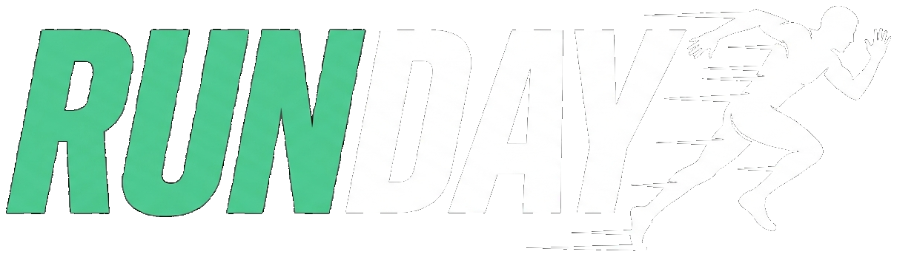

Fome de Amor

Um dia de solidariedade
Percurso
Percurso
Informações
28 de fevereiro de 2027Domingo
06:30hChegue com antecedência para retirada do kit
Projeto Fome de AmorJaraguá do Sul / SC
4K, 8K e KidsPara todas as idades e níveis
Sobre o evento
O Fome de Amor RUN DAY é mais do que uma corrida — é um dia de solidariedade. Toda a mobilização em torno do evento ajuda a sustentar os projetos sociais do Fome de Amor, levando alimento, cuidado e esperança para quem mais precisa. Participe correndo, levando a família, ou apoiando como voluntário.